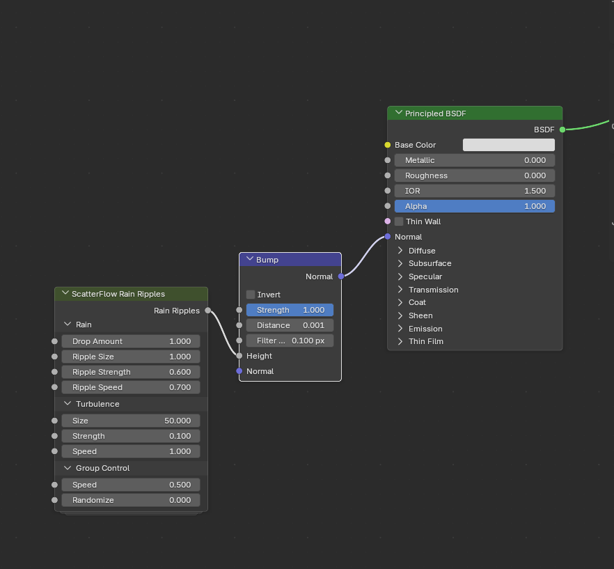
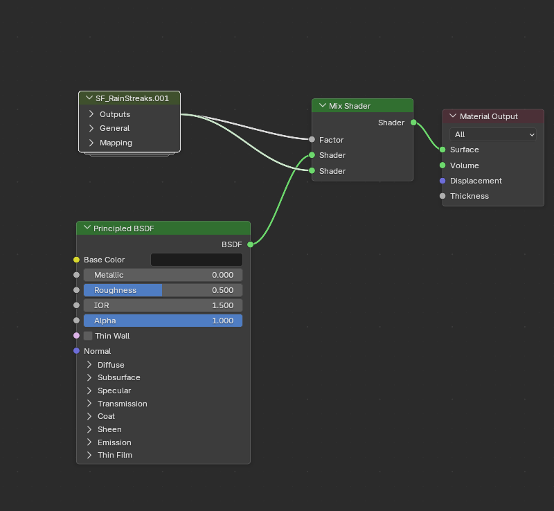

Add rain, snow, wind, and atmospheric effects from the content library
How it works
Weather and atmosphere presets are included in the ScatterFlow content pack. Find them in the Weather and Atmosphere catalogs of the ScatterFlow_Pro_ContentPack asset library.
Most effects are objects that you drag into the scene. Select the object and open the Modifier tab, identified by the blue wrench in the Properties editor, to adjust its settings. Expand the individual sections to access their controls. Rain Ripples and Rain Streaks instead use material node groups, as described below.
Most effects are animated. Press Space to play the timeline and preview their movement.
1. Open Weather > Rain in the Asset Browser. Choose Drizzle, Steady Rain, or Storm as a starting intensity.
2. Drag the preset into the viewport and play the timeline. Move and scale the effect object to cover the required area.
The main controls are in the RAIN section:
Rain Drop Type: choose Drop for rounded drops or Line for streaks. Lines make heavy or fast rain easier to see.
Rain Amount: controls rainfall density. Increase it for heavier rain or reduce it for lighter rain.
RainDrop Size: sets the size of individual drops.
In the Wind section, WindX and WindY push rain sideways. Adjust them to change the angle of the rainfall.
Splashes adds impacts where rain hits the ground. Turbulence varies the motion, and Optimization can restrict the effect to the camera's view.
Use contrast to make rain visible.
Rain reads more clearly against a darker background. Reducing world lighting can also help establish an overcast appearance.
Rain Ripples

Raindrops landing on water and wet ground
Rain Ripples is a material node group, not a separate scene object. It adds animated impact rings to surfaces such as puddles, roads, or ponds.
1. Select the target object and open the Shader Editor. A low-Roughness material makes the ripples easier to see in reflections.
2. Open Weather > Rain in the Asset Browser and drag Rain Ripples into the Shader Editor.
3. Add a Bump node using Shift + A > Vector > Bump.
4. Connect Rain Ripples to the Bump node's Height, then connect the Bump node's Normal to the Principled BSDF's Normal input.
5. Play the timeline to preview expanding ripple rings.
The Rain Ripples node includes these controls:
Drop Amount: the number of raindrop impacts. Ripple Size: the width of each ring. Ripple Strength: the apparent depth of the ripples. Ripple Speed: the speed at which the rings expand. Turbulence: broader surface movement, similar to wind disturbing the water. Group Control: the overall Speed and a Randomize control for changing the pattern.
Ripples too subtle?
Increase the Bump node's Distance. The appropriate value depends on the surface's size in your scene.
Rain Streaks

Water running down glass and walls
Rain Streaks adds animated water trails and droplets to a material. Use it for windows, metal panels, glass, or wet walls.
1. Select the object and open the Shader Editor.
2. Open Weather > Rain in the Asset Browser and drag SF_RainStreaks into the Shader Editor.
3. Add a Mix Shader using Shift + A > Shader > Mix Shader, then make these connections:
Connect SF_RainStreaks Mask Output to the Mix Shader's Factor.
Connect the existing surface material, such as a Principled BSDF, to the first Shader input.
Connect SF_RainStreaks BSDF to the second Shader input.
Connect the Mix Shader output to Surface on the Material Output.
4. Play the timeline to preview water moving over the underlying material.
The node includes these controls:
Normal Strength, under General: how strongly the water appears raised from the surface. Bump Strength: additional surface depth for droplets. Visibility: the strength of the streaks over the original material. Scale, under Mapping: the size of the pattern. Lower values produce larger streaks. Use Location and Rotation to position and orient them.
A UV map is required.
Streaks use the object's UVs. If the object has no UV map, add one with UV > Smart UV Project in Edit Mode. Include a sky or lights in the scene so the water has surroundings to reflect.
Snow
Falling snow
1. Open Weather > Snow and drag Snowfall, Flurries, or Blizzard into the scene.
2. Position the effect above the area to cover, then play the timeline. Flakes fall from the effect object.
The main controls are:
Density, in the Snow section: the number of falling flakes. Increase it for heavier snowfall or reduce it for a lighter effect.
Min Radius and Max Radius: the range of flake sizes.
Strength, in the Wind section: how strongly wind pushes the snow. Direction sets the direction of that movement.
Simulation Speed: the rate of the snowfall simulation.
Accumulation controls snow buildup, Turbulence adds swirling motion, Collision allows flakes to land on selected objects, and Instance replaces the flakes with your own objects.
Play from the start for accumulation.
Snow buildup is calculated from the first frame. Jumping ahead can require the simulation to catch up.
Snow Cover
Snow lying on objects
Snow Cover adds settled snow to surfaces such as rocks, roofs, branches, and fences. It does not require timeline playback.
1. Place the objects that should receive snow in a collection, such as Rocks.
2. Drag Snow Cover from Weather > Snow into the scene. Its drop position does not affect which objects receive snow.
3. Expand Snow Main and select the target collection in Collission Collection. Snow appears on the objects' upper surfaces.
Snow Type: choose Volume or Island. These generate the cover differently; compare them on your target objects.
Snow Thickness: the depth of the cover.
Smoothness: rounds the generated snow for a softer surface.
Subdivision Level: adds detail at a higher processing cost.
Snow Pattern adds noise to the surface. Scatter places small objects over the snow.
Start with a low Subdivision Level.
Detailed source objects can make Snow Cover expensive to evaluate. Increase the level only when the additional detail is needed for the final result.
Wind
Making an object sway
These presets add bending and swaying to individual objects, such as trees or flags. For scatter layers, use Wind in the Dynamics section instead.
1. Open Weather > Wind and choose Gentle Breeze, Windy, or Storm.
2. Drag the preset onto the target object and release it over the object.
3. Play the timeline to preview the movement.
The Main section contains:
Wind Strength: how far the object bends. For example, compare 0.25 for gentle movement with 1.5 for stronger bending, then adjust for your asset.
Direction: the wind direction.
Wind Speed: how quickly gusts change.
Bending: how much the upper part bends relative to the base.
Wind Noise Size: the size of the gust pattern.
Minor Wind adds faster, smaller movement for details such as leaves.
Falling Leaves
Leaves drifting down
1. Open Atmosphere and drag Falling Leafs into the scene.
2. Play the timeline to preview falling, tumbling leaves.
Menu: selects the leaf type. Options include Oak, Maple, Beech, Cherry Blossom, Willow, Lavender, Red Rose, Grass, and confetti.
Count, in Spawning: how many leaves are falling at once. Increase it for more leaves or reduce it for a lighter effect.
Scale, in Size: the size of each leaf.
Tumble Speed, in Rotation: how quickly leaves rotate as they fall.
In Movement, Fall Speed controls downward motion, while Sway Amount and Sway Speed control side-to-side movement.
Wind Direction moves the leaves across the scene. Use Curve to guide them along a drawn path, such as a gust moving down a street.
Embers
Sparks rising from a fire
Drag Embers from Atmosphere to the source of the effect, then play the timeline. The sparks rise and drift away.
Count, in Spawning: sets the number of embers. Increase it for a fuller effect or reduce it for fewer sparks.
Lifetime: how long each ember remains visible, which also affects how high it travels before fading.
Movement controls upward motion and sway. Wind Direction controls their drift.
Embers are easier to see against a dark environment.
Lower world lighting for dusk, night, or other low-light scenes.
Dust
Specks floating in the air
Dust creates small particles that drift slowly through the air. Use it as a subtle effect in sunlight, interior spaces, or other areas where airborne particles should be visible.
Drag Dust from Atmosphere into the scene and play the timeline.
Count, in Spawning: sets the number of dust particles. Keep it low for a subtle effect.
Scale, in Size: the size of each particle.
In Movement, Settle Speed controls how slowly particles sink, and Sway controls side-to-side movement.
Lighting determines visibility.
A strong light against a dark background, such as sunlight entering a dim room, makes dust easier to read.
Bug Swarm and Moths
Bug Swarm
Creates a localized cloud of circling gnats, suitable for areas near water or lights.
1. Drag BugSwarm from Atmosphere into the scene. The swarm forms above the drop location.
2. Play the timeline.
The gnats are approximately 2 mm at their intended real-world size. They may be difficult to see from a distance; use a close camera or increase their scale.
Scale: the size of the gnats. A value of 0.005 represents the life-size setup; increasing it to 0.25 makes the gnats easier to see.
Count, in Spawning: the number of gnats. Increase it for a fuller swarm or reduce it for a smaller group.
In Flight, Circle Radius and Circling Speed control the orbit, Attraction keeps the swarm together, and Dart Amount controls sudden movements away from the group.
Match the scale to the shot.
Keep the gnats small for close-up realism or enlarge them when the swarm needs to remain visible in a wider view.
Moths
Creates larger insects that flutter around a location. Use them near lamps, porches, or campfires.
1. Drag Moths from Atmosphere to the desired location. Search for “Moth” in the Asset Browser to find it.
2. Play the timeline.
Count, in Spawning: the number of moths. Increase it for a larger group or reduce it for fewer moths.
Scale: the size of each moth.
Wing Flutter, in Rotation: the speed of the wing movement.
Flight uses the same types of controls as Bug Swarm for circling, attraction, and darting.
Both Bug Swarm and Moths can follow a path. Enable Use Curve Path in the Curve section and select the curve.